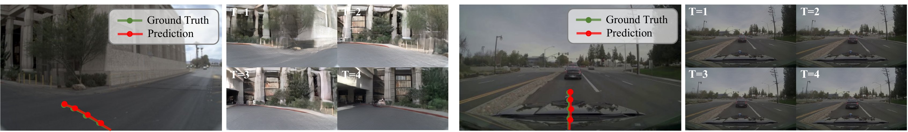

Qualitative Results

Qualitative results on NAVSIM (left) and PhysicalAI-Autonomous-Vehicles (right). The predicted ego trajectories are consistent with the jointly generated future scenes.

Additional qualitative results showcasing DriveWAM's joint video-action generation across diverse driving scenarios.